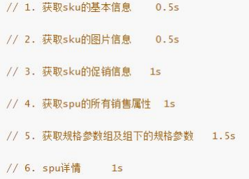
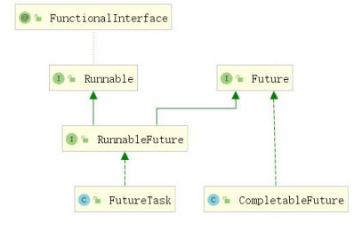
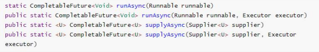
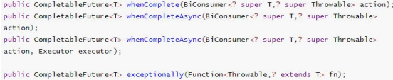
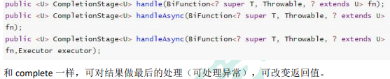
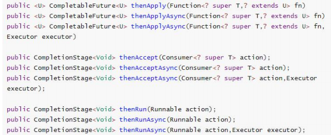
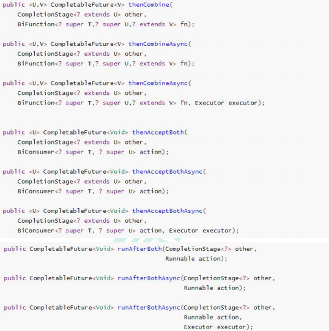
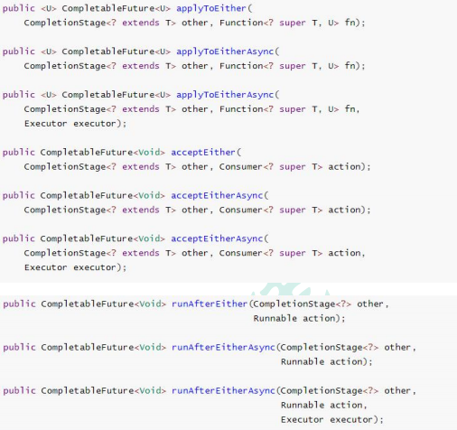
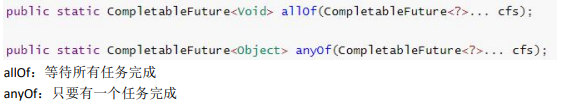

# 线程池
# 什么是线程池：
java.util.concurrent.Executors 提供了一个 java.util.concurrent.Executor 接口的实现用于创建线程池
多线程技术主要解决处理器单元内多个线程执行的问题，它可以显著减少处理器单元的闲置时间，增加处理器单元的吞吐能力。
假设一个服务器完成一项任务所需时间为：T1 创建线程时间，T2 在线程中执行任务的时间，T3 销毁线程时间。
如果：T1 + T3 远大于 T2，则可以采用线程池，以提高服务器性能。
一个线程池包括以下四个基本组成部分：
1、线程池管理器（ThreadPool）：用于创建并管理线程池，包括 创建线程池，销毁线程池，添加新任务；
2、工作线程（PoolWorker）：线程池中线程，在没有任务时处于等待状态，可以循环的执行任务；
3、任务接口（Task）：每个任务必须实现的接口，以供工作线程调度任务的执行，它主要规定了任务的入口，任务执行完后的收尾工作，任务的执行状态等；
4、任务队列（taskQueue）：用于存放没有处理的任务。提供一种缓冲机制。
线程池技术正是关注如何缩短或调整 T1,T3 时间的技术，从而提高服务器程序性能的。它把 T1，T3 分别安排在服务器程序的启动和结束的时间段或者一些空闲的时间段，这样在服务器程序处理客户请求时，不会有 T1，T3 的开销了。
线程池不仅调整 T1,T3 产生的时间段，而且它还显著减少了创建线程的数目，看一个例子：
假设一个服务器一天要处理 50000 个请求，并且每个请求需要一个单独的线程完成。在线程池中，线程数一般是固定的，所以产生线程总数不会超过线程池中线程的数目，而如果服务器不利用线程池来处理这些请求则线程总数为 50000。一般线程池大小是远小于 50000。所以利用线程池的服务器程序不会为了创建 50000 而在处理请求时浪费时间，从而提高效率。
# 线程池的作用：
线程池作用就是限制系统中执行线程的数量。
根据系统的环境情况，可以自动或手动设置线程数量，达到运行的最佳效果；少了浪费了系统资源，多了造成系统拥挤效率不高。用线程池控制线程数量，其他线程排队等候。一个任务执行完毕，再从队列的中取最前面的任务开始执行。若队列中没有等待进程，线程池的这一资源处于等待。当一个新任务需要运行时，如果线程池中有等待的工作线程，就可以开始运行了；否则进入等待队列。
# 开发中为什么使用线程池
- 降低资源的消耗
- 通过重复利用已经创建好的线程降低线程的创建和销毁带来的损耗
- 提高响应速度
- 因为线程池中的线程数没有超过线程池的最大上限时，有的线程处于等待分配任务
的状态，当任务来时无需创建新的线程就能执行 - 提高线程的可管理性
- 线程池会根据当前系统特点对池内的线程进行优化处理，减少创建和销毁线程带来
的系统开销。无限的创建和销毁线程不仅消耗系统资源，还降低系统的稳定性，使
用线程池进行统一分配
- 线程池会根据当前系统特点对池内的线程进行优化处理，减少创建和销毁线程带来
# 为什么要用线程池:
1. 减少了创建和销毁线程的次数，每个工作线程都可以被重复利用，可执行多个任务。
2. 可以根据系统的承受能力，调整线程池中工作线线程的数目，防止因为消耗过多的内存，而把服务器累趴下 (每个线程需要大约 1MB 内存，线程开的越多，消耗的内存也就越大，最后死机)。
Java 里面线程池的顶级接口是 Executor，但是严格意义上讲 Executor 并不是一个线程池，而只是一个执行线程的工具。真正的线程池接口是 ExecutorService。
比较重要的几个类：
| ExecutorService | 真正的线程池接口。 |
|---|---|
| ScheduledExecutorService | 能和 Timer/TimerTask 类似，解决那些需要任务重复执行的问题。 |
| ThreadPoolExecutor | ExecutorService 的默认实现。 |
| ScheduledThreadPoolExecutor | 继承 ThreadPoolExecutor 的 ScheduledExecutorService 接口实现，周期性任务调度的类实现。 |
# 常见线程池
①newSingleThreadExecutor
单个线程的线程池，即线程池中每次只有一个线程工作，单线程串行执行任务
②newFixedThreadExecutor(n)
固定数量的线程池，没提交一个任务就是一个线程，直到达到线程池的最大数量，然后后面进入等待队列直到前面的任务完成才继续执行
③newCacheThreadExecutor（推荐使用）
可缓存线程池，当线程池大小超过了处理任务所需的线程，那么就会回收部分空闲（一般是 60 秒无执行）的线程，当有任务来时，又智能的添加新线程来执行。
④newScheduleThreadExecutor
大小无限制的线程池，支持定时和周期性的执行线程
# 使用线程池方式
要配置一个线程池是比较复杂的，尤其是对于线程池的原理不是很清楚的情况下，很有可能配置的线程池不是较优的，因此在 Executors 类里面提供了一些静态工厂，生成一些常用的线程池。
# 1. newSingleThreadExecutor
创建一个单线程的线程池。这个线程池只有一个线程在工作，也就是相当于单线程串行执行所有任务。如果这个唯一的线程因为异常结束，那么会有一个新的线程来替代它。此线程池保证所有任务的执行顺序按照任务的提交顺序执行。
# 2.newFixedThreadPool
创建固定大小的线程池。每次提交一个任务就创建一个线程，直到线程达到线程池的最大大小。线程池的大小一旦达到最大值就会保持不变，如果某个线程因为执行异常而结束，那么线程池会补充一个新线程。
# 3. newCachedThreadPool
创建一个可缓存的线程池。如果线程池的大小超过了处理任务所需要的线程，
那么就会回收部分空闲（60 秒不执行任务）的线程，当任务数增加时，此线程池又可以智能的添加新线程来处理任务。此线程池不会对线程池大小做限制，线程池大小完全依赖于操作系统（或者说 JVM）能够创建的最大线程大小。
# 4.newScheduledThreadPool
创建一个大小无限的线程池。此线程池支持定时以及周期性执行任务的需求。
# 原生的线程池 ThreadPoolExecutor 详解
ThreadPoolExecutor 的完整构造方法的签名是：ThreadPoolExecutor (int corePoolSize, int maximumPoolSize, long keepAliveTime, TimeUnit unit, BlockingQueue<Runnable> workQueue, ThreadFactory threadFactory, RejectedExecutionHandler handler) .
# 七大参数详解
corePoolSize - 池中所保存的线程数，包括空闲线程。
maximumPoolSize - 池中允许的最大线程数。
keepAliveTime - 当线程数大于核心时，此为终止前多余的空闲线程等待新任务的最长时间。
unit - keepAliveTime 参数的时间单位。
workQueue - 执行前用于保持任务的队列。此队列仅保持由 execute 方法提交的 Runnable 任务。
threadFactory - 执行程序创建新线程时使用的工厂。
handler - 由于超出线程范围和队列容量而使执行被阻塞时所使用的处理程序。
ThreadPoolExecutor 是 Executors 类的底层实现。
# 运行流程：
1、线程池创建，准备好 core 数量的核心线程，准备接受任务
2、新的任务进来，用 core 准备好的空闲线程执行。
(1) 、core 满了，就将再进来的任务放入阻塞队列中。空闲的 core 就会自己去阻塞队
列获取任务执行
(2) 、阻塞队列满了，就直接开新线程执行，最大只能开到 max 指定的数量
(3) 、max 都执行好了。Max-core 数量空闲的线程会在 keepAliveTime 指定的时间后自
动销毁。最终保持到 core 大小
(4) 、如果线程数开到了 max 的数量，还有新任务进来，就会使用 reject 指定的拒绝策
略进行处理
3、所有的线程创建都是由指定的 factory 创建的。
ThreadPoolExecutor executor = new ThreadPoolExecutor(5, | |
200, | |
10, | |
TimeUnit.SECONDS, | |
new LinkedBlockingQueue<>(10000), // 这里源码不设置容量默认最大值，容易导致内存不够，应该由压力测试得出结果 | |
Executors.defaultThreadFactory(), // 默认的工厂，相当于初始化了 thread 线程，配置了默认的线程名称等 | |
new ThreadPoolExecutor.AbortPolicy()); // 拒绝策略，阻塞队列都满了则进行拒绝丢弃，可以拒绝新的任务，或者扔掉老的任务 |
# 面试题
一个线程池 core 7； max 20 ，queue：50，100 并发进来怎么分配的？
先有 7 个能直接得到执行，接下来 50 个进入队列排队，在多开 13 个继续执行。现在 70 个 被安排上了。剩下 30 个默认拒绝策略。
如果不想丢弃可使用 CallerRunsPolicy ，此策略不会丢弃任务但是并不会异步执行，看源码，直接调用的 runnable 的 run 方法，为同步方法
# CompletableFuture 异步编排
static ExecutorService service = Executors.newCachedThreadPool(); | |
public static void main(String[] args) throws ExecutionException, InterruptedException { | |
System.out.println("main....start"); | |
CompletableFuture<Void> runAsync = CompletableFuture.runAsync(() -> { | |
System.out.println("线程：" + Thread.currentThread().getName()); | |
}, service); | |
CompletableFuture<Integer> supplyAsync = CompletableFuture.supplyAsync(() -> { | |
System.out.println("线程：" + Thread.currentThread().getName()); | |
int i = 10 / 0; | |
return 1; | |
}, service).whenComplete((res,exception) -> { | |
// 这里只能接受结果和异常 | |
System.out.println("线程完成结果：" + res + " 异常结果：" + exception); | |
}) // 此回调可以接收异常并对返回值做默认处理 | |
.exceptionally(e -> 10); | |
System.out.println(supplyAsync.get()); | |
System.out.println("main....end"); | |
} |
业务场景： 查询商品详情页的逻辑比较复杂，有些数据还需要远程调用，必然需要花费更多的时间。

假如商品详情页的每个查询，需要如下标注的时间才能完成 那么，用户需要 5.5s 后才能看到商品详情页的内容。很显然是不能接受的。 如果有多个线程同时完成这 6 步操作，也许只需要 1.5s 即可完成响应。
Future 是 Java 5 添加的类，用来描述一个异步计算的结果。你可以使用 isDone 方法检查计算是否完成，或者使用 get 阻塞住调用线程，直到计算完成返回结果，你也可以使用 cancel 方法停止任务的执行。
虽然 Future 以及相关使用方法提供了异步执行任务的能力，但是对于结果的获取却是很不方便，只能通过阻塞或者轮询的方式得到任务的结果。阻塞的方式显然和我们的异步编程的初衷相违背，轮询的方式又会耗费无谓的 CPU 资源，而且也不能及时地得到计算结果，为什么不能用观察者设计模式当计算结果完成及时通知监听者呢？
很多语言，比如 Node.js，采用回调的方式实现异步编程。Java 的一些框架，比如 Netty，自己扩展了 Java 的 Future 接口，提供了 addListener 等多个扩展方法；Google guava 也提供了通用的扩展 Future；Scala 也提供了简单易用且功能强大的 Future/Promise 异步编程模式。作为正统的 Java 类库，是不是应该做点什么，加强一下自身库的功能呢？
在 Java 8 中，新增加了一个包含 50 个方法左右的类: CompletableFuture，提供了非常强大的 Future 的扩展功能，可以帮助我们简化异步编程的复杂性，提供了函数式编程的能力，可以通过回调的方式处理计算结果，并且提供了转换和组合 CompletableFuture 的方法。CompletableFuture 类实现了 Future 接口，所以你还是可以像以前一样通过 get 方法阻塞或者轮询的方式获得结果，但是这种方式不推荐使用。
CompletableFuture 和 FutureTask 同属于 Future 接口的实现类，都可以获取线程的执行结果。

# 创建异步对象
CompletableFuture 提供了四个静态方法来创建一个异步操作。

runXxxx 都是没有返回结果的，supplyXxx 都是可以获取返回结果的
可以传入自定义的线程池，否则就用默认的线程池；
# 计算完成时回调方法

- whenComplete 可以处理正常和异常的计算结果，exceptionally 处理异常情况。
- whenComplete 和 whenCompleteAsync 的区别：
whenComplete：是执行当前任务的线程执行继续执行 whenComplete 的任务。
whenCompleteAsync：是执行把 whenCompleteAsync 这个任务继续提交给线程池来进行执行。
方法不以 Async 结尾，意味着 Action 使用相同的线程执行，而 Async 可能会使用其他线程 执行（如果是使用相同的线程池，也可能会被同一个线程选中执行
# handle 方法

# 线程串行化方法
/** | |
* 串行化 | |
*/ | |
// 无接收值与返回值 | |
CompletableFuture.supplyAsync(() -> { | |
System.out.println("线程：" + Thread.currentThread().getName()); | |
int i = 10 / 4; | |
return 1; | |
},service).thenRun(() -> System.out.println("执行任务2")); | |
// 有接收值无返回值 | |
CompletableFuture.supplyAsync(() -> { | |
System.out.println("线程：" + Thread.currentThread().getName()); | |
int i = 10 / 4; | |
return 1; | |
},service).thenAccept((res) -> System.out.println("执行任务 结果" + res)); | |
// 有接收值与返回值 | |
CompletableFuture<String> future = CompletableFuture.supplyAsync(() -> { | |
System.out.println("线程：" + Thread.currentThread().getName()); | |
int i = 10 / 4; | |
return 1; | |
}, service).thenApply((res) -> { | |
System.out.println("执行任务 结果" + res); | |
return "hello" + res; | |
}); | |
System.out.println(future.get()); | |
System.out.println("main....end"); |

thenApply 方法：当一个线程依赖另一个线程时，获取上一个任务返回的结果，并返回当前
任务的返回值。
thenAccept 方法：消费处理结果。接收任务的处理结果，并消费处理，无返回结果。
thenRun 方法：只要上面的任务执行完成，就开始执行 thenRun，只是处理完任务后，执行
thenRun 的后续操作
带有 Async 默认是异步执行的。同之前。
以上都要前置任务成功完成。
Function<? super T,? extends U>
T：上一个任务返回结果的类型
U：当前任务的返回值类型
# 两任务组合 - 都要完成

两个任务必须都完成，触发该任务。
thenCombine：组合两个 future，获取两个 future 的返回结果，并返回当前任务的返回值
thenAcceptBoth：组合两个 future，获取两个 future 任务的返回结果，然后处理任务，没有
返回值。
runAfterBoth：组合两个 future，不需要获取 future 的结果，只需两个 future 处理完任务后，
处理该任务。
// 两任务组合 - 都要完成 指定两个任务完成后第三个任务才开始执行 | |
CompletableFuture<Integer> future1 = CompletableFuture.supplyAsync(() -> { | |
System.out.println("线程任务1：" + Thread.currentThread().getName()); | |
int i = 10 / 4; | |
return 1; | |
}, service); | |
CompletableFuture<Integer> future2 = CompletableFuture.supplyAsync(() -> { | |
System.out.println("线程任务2：" + Thread.currentThread().getName()); | |
int i = 10 / 4; | |
return 2; | |
}, service); | |
// 无接收值与返回值 | |
future1.runAfterBothAsync(future2,() -> System.out.println("任务3开始"),service); | |
// 有接收值无返回值 | |
future1.thenAcceptBothAsync(future2,(f1,f2) -> { | |
System.out.println("任务3开始计算任务1加任务2等于 " + (f1 + f2)); | |
},service); | |
// 有接收值与返回值 | |
CompletableFuture<Integer> future3 = future1.thenCombineAsync(future2, (f1, f2) -> { | |
System.out.println("任务3开始计算任务1加任务2等于 " + (f1 + f2)); | |
return f1 * f2; | |
}, service); | |
// System.out.println(future.get()); | |
System.out.println(future3.get()); | |
System.out.println("main....end"); |
# 两任务组合 - 一个完成

当两个任务中，任意一个 future 任务完成的时候，执行任务。
applyToEither：两个任务有一个执行完成，获取它的返回值，处理任务并有新的返回值。
acceptEither：两个任务有一个执行完成，获取它的返回值，处理任务，没有新的返回值。
runAfterEither：两个任务有一个执行完成，不需要获取 future 的结果，处理任务，也没有返
回值。
/** | |
* 两任务组合 - 一个完成 | |
*/ | |
// 无接收值与返回值 | |
future1.runAfterEitherAsync(future2,() -> System.out.println("任务3在任务一或二任意一个完事就开始"),service); | |
// 有接收值无返回值 | |
future1.acceptEitherAsync(future2,(res) -> | |
System.out.println("任务3在任务一或二任意一个完事就开始" + res) | |
,service); | |
// 有接收值与返回值 | |
CompletableFuture<Integer> future4 = future1.applyToEitherAsync(future2, (res) -> { | |
System.out.println("任务3在任务一或二任意一个完事就开始" + res); | |
return res; | |
} | |
, service); | |
// System.out.println(future.get()); | |
System.out.println(future4.get()); | |
// System.out.println(future3.get()); | |
System.out.println("main....end"); |
# 多任务组合

/** | |
* 多任务组合 | |
*/ | |
CompletableFuture<String> f1 = CompletableFuture.supplyAsync(() -> { | |
System.out.println("基本信息"); | |
return "黑色"; | |
}, service); | |
CompletableFuture<String> f3 = CompletableFuture.supplyAsync(() -> { | |
try { | |
Thread.sleep(3000); | |
} catch (InterruptedException e) { | |
e.printStackTrace(); | |
} | |
System.out.println("图片信息"); | |
return "xiaomi.jpg"; | |
}, service); | |
CompletableFuture<String> f2 = CompletableFuture.supplyAsync(() -> { | |
System.out.println("规格参数"); | |
return "8GB"; | |
}, service); | |
// 等待所有任务完成 | |
CompletableFuture<Void> all = CompletableFuture.allOf(f1, f2, f3); | |
all.get(); // 执行这个才会成功 | |
System.out.println(f1.get() + ":" +f2.get() + ":" + f3.get()); | |
// CompletableFuture<Object> any = CompletableFuture.anyOf(f1, f2, f3); | |
// any.get (); // 执行这个才会成功 | |
// System.out.println(any.get()); |